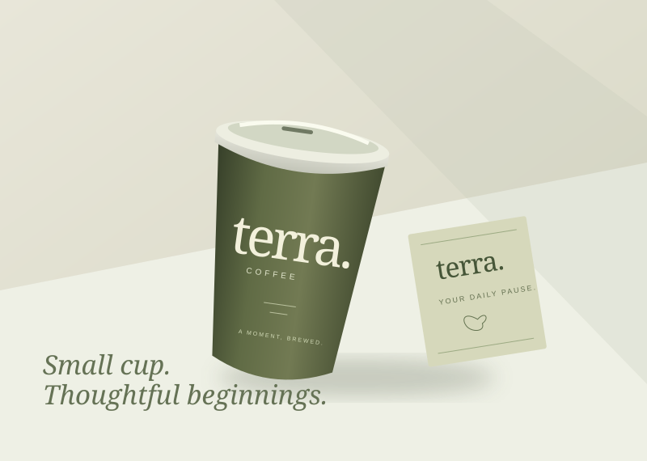
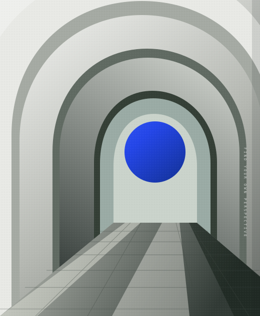
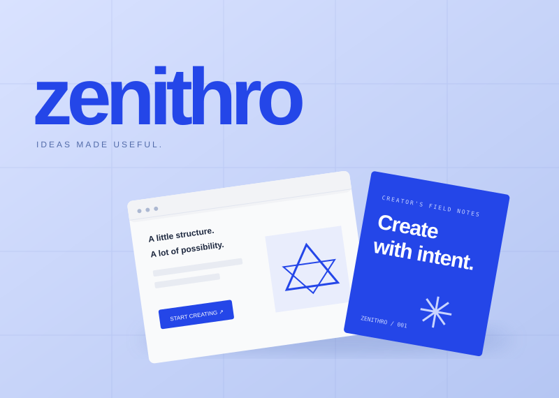
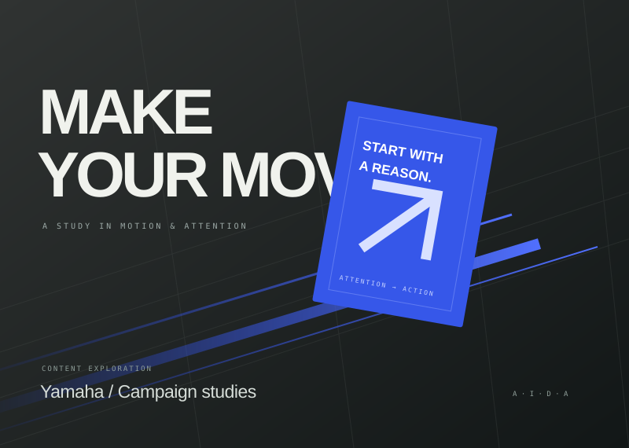
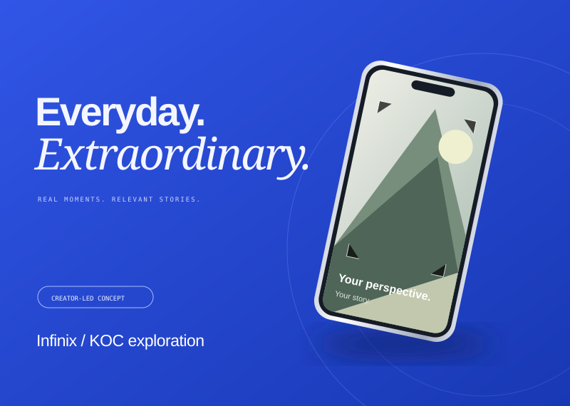
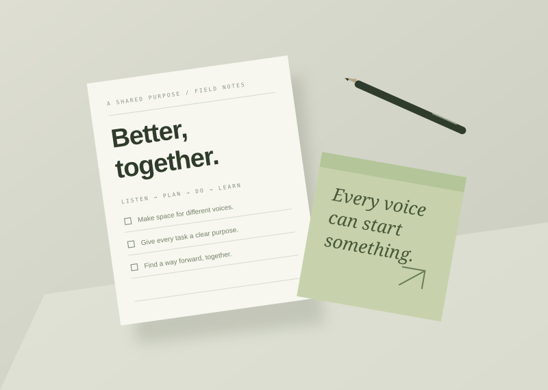
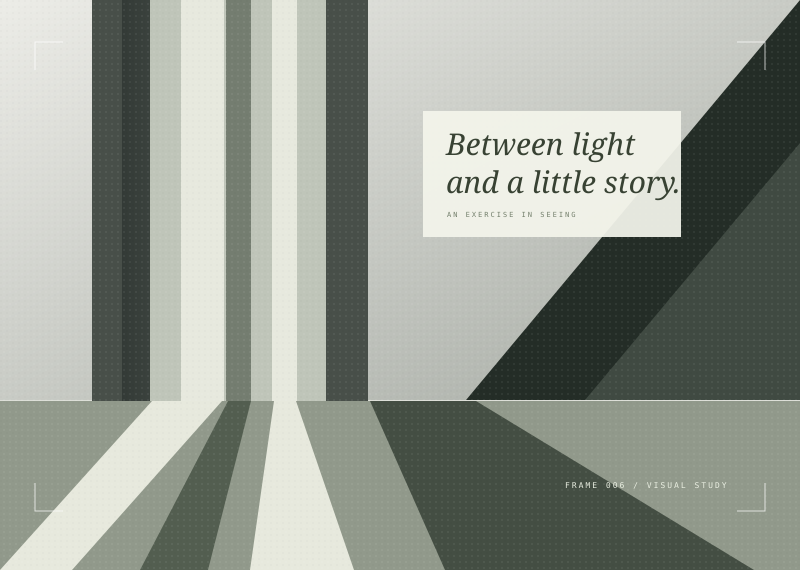

01 / 06Brand concept
Explore the project CONCEPT COVER / PLACEHOLDERTerra Coffee
A school business project focused on developing a practical coffee brand for the student market.
Hey, I'm Iki
Digital Business student exploring marketing, content, visual storytelling, and creative strategy.

THINK. CREATE. REPEAT.A mix of school projects, creative explorations, and ideas worth building.

A school business project focused on developing a practical coffee brand for the student market.

A digital product concept designed for creators and Digital Business students.

A collection of marketing concepts and social media content developed around Yamaha motorcycle products.

An exploration of audience personas and relatable, creator-led content for a KOC campaign concept.

Projects involving student organization, communication, evaluation systems, and event coordination.

An ongoing exploration of light, composition, and the small stories hiding in everyday scenes.
Behind every project: a question, a process, and something new to learn.
MORE IDEAS IN THE MAKINGFarrizqi Ichsan Maulana
Digital Marketing Student
Creative Strategist
Content & Visual Enthusiast
Kreatif dalam melihat kemungkinan.
Terstruktur dalam mewujudkannya.
Saya adalah pelajar SMK Bisnis Digital yang tertarik pada bagaimana sebuah ide dapat berubah menjadi brand, campaign, content, atau business project yang memiliki tujuan jelas.
Saya banyak mengeksplorasi digital marketing, social media, visual content, photography, filmmaking, dan business development.
Saya suka menggabungkan sisi kreatif dengan cara berpikir yang terstruktur: memahami masalah, mencari insight, menyusun strategi, kemudian mengubahnya menjadi sesuatu yang dapat dilihat dan digunakan.
Juara 2 LKS Digital Marketing Jakarta Selatan 1. Belajar melalui role play sales, carousel HVC, dan live selling.
Produser “Jejak Batik”: budgeting, recce, dan koordinasi produksi. Juara Harapan 3 FLS3N Film Pendek Jakarta Selatan 1.
Tim keuangan Santara, Virtual Company Indonesia. VCI Silver Award untuk Best Business Plan dan Outstanding Presentation.
Skills I’m learning, practicing, and connecting through real projects.
Understanding people. Finding relevance.
Giving an idea a visual language.
Connecting creativity with purpose.
A small, evolving creative toolkit.
Built through practice. Sharpened with every project.
Understand the problem, audience, and context.
Start with better questions.Research, brainstorm, challenge assumptions, and find opportunities.
Make room for possibilities.Turn the idea into strategy, content, design, or business execution.
Make the thinking tangible.Evaluate the result, identify weaknesses, and improve the work.
Stay curious. Keep improving.I want to understand why they should exist,
who they are for, and what they are
supposed to achieve.